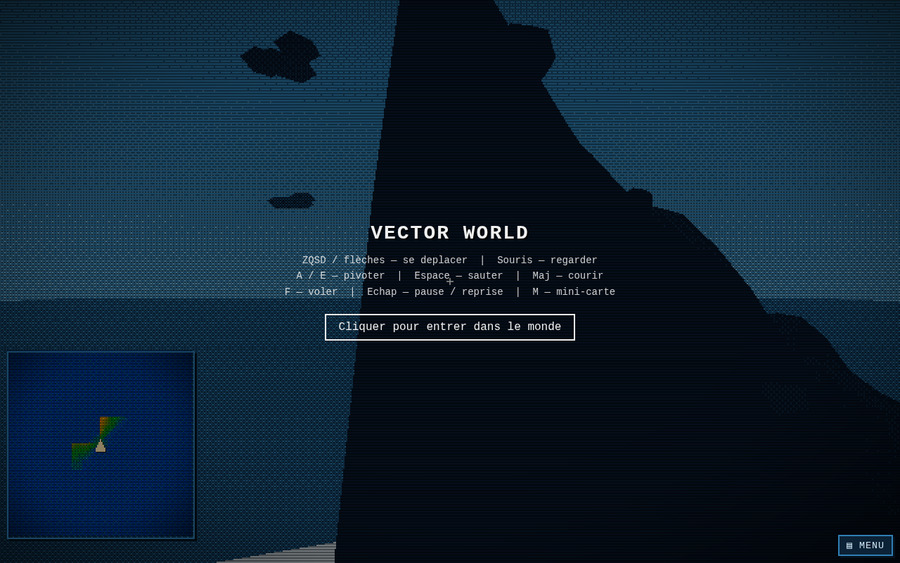

Vector World
Monde 3D rétro low-poly à facettes plates, façon démo 16 bits : montagnes procédurales, tramage Bayer, wireframe, cycle jour/nuit, effets CRT (scanlines, vignette) et éditeur de relief. Construit avec Three.js, Vite et simplex-noise.
